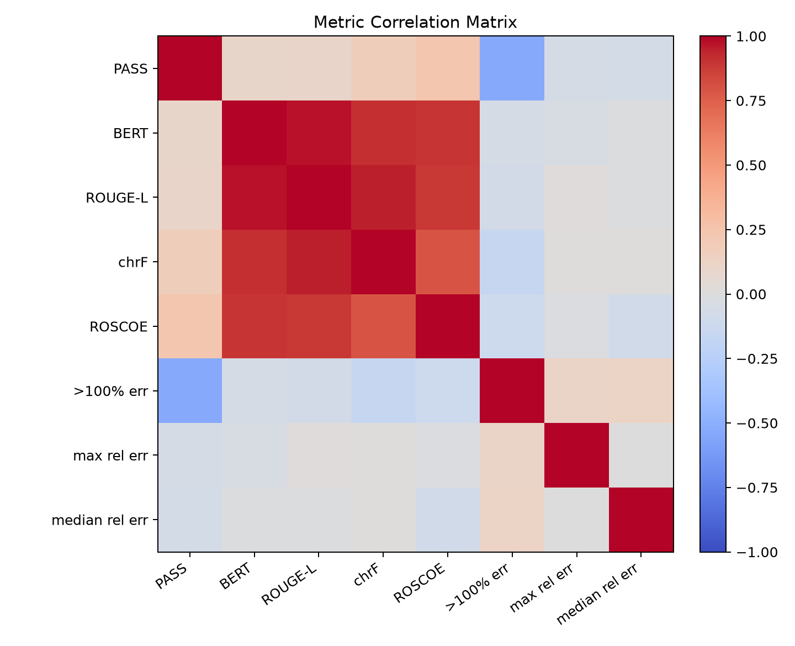
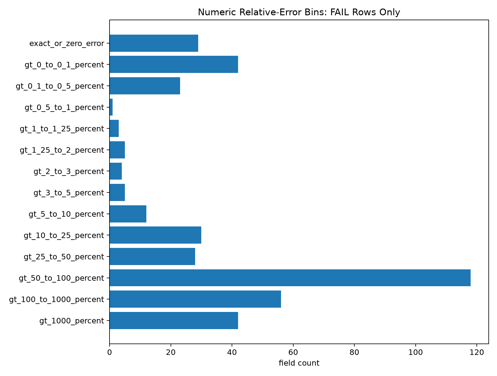

Model leaderboard
Pass rate by model
Fail count by model
Model comparison table
Click table headers to sort.
Mean metric scores by model
Metric comparison
Correlation with deterministic PASS
PASS/FAIL mean gap
Correlation matrix

The matrix comes from the findings-report artifact. Higher correlation between text metrics does not imply correctness.
Numeric error distribution
746
Numeric field comparisons
740
Included numeric comparisons
0.0081%
PASS median relative error
65.4%
FAIL median relative error
90.7%
Failed-field median relative error
Relative-error bins
Failed-only relative-error bins

Tolerance layers
Tolerance rescue counts
Interpretation
+25% tolerance multiplier rescued 0 rows. +1 percentage point rescued 1 row. 134 original FAIL rows remained hard fail after +1pp.
Most failures are not tolerance-boundary numeric misses.
Large numeric failure gates
98
Fields with >100% relative error
62
Rows affected
42
Fields with >1000% relative error